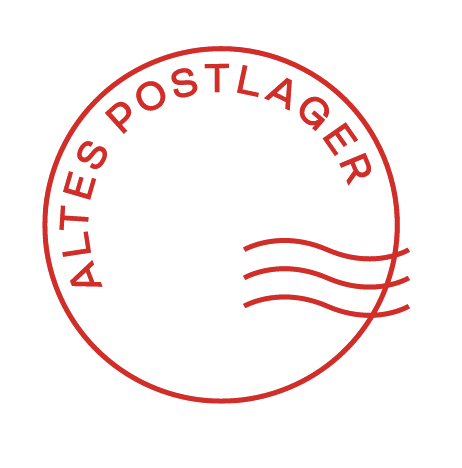

ÜBER UNS
PROGRAMM
TEAM
GASTRONOMIE
PARTNER
MIETEN
JOBS
KONTAKT
Veranstaltungsart
LIVE MUSIK
THEATER
COMEDY
PARTY
WEIN
PODCAST
FLOHMARKT
MESSE
QUIZ
FESTIVAL
SPORT
SKATE
YOGA
Musikrichtung
ROCK
JAZZ
ELECTRO
HIP HOP
POP
Gastronomisches Angebot
AN O BAN
KAIRO
LAURENZ
GUTLEUT BAR
ANGEBOT 2
ARCADE
FILTER EINKLAPPEN